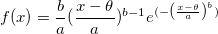
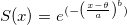
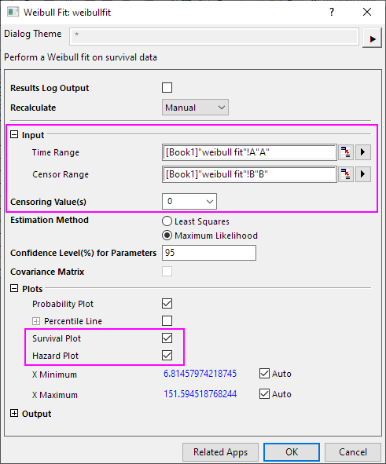
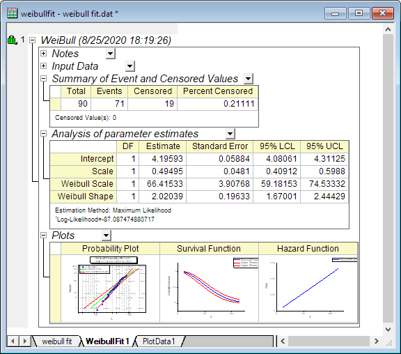
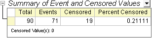
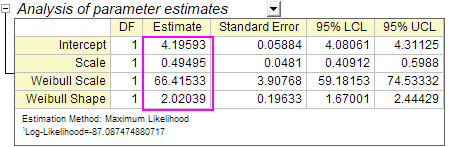
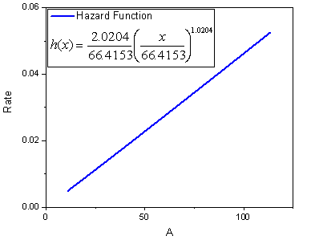

Weibull-Fit
Weibull-Fit
Zusammenfassung
Der Weibull-Fit ist eine Art der parametrischen Methode zum Analysieren des Verhältnisses zwischen Lebensdauerfunktion (Überlebenszeitfunktion) und Ausfallzeit. Nach der Analyse erhalten wir Parameterschätzungen, die die Überlebens- und Hazardfunktionen der Weibull-Verteilung bestimmen.
Weibull-Verteilung:

wobei  , für
, für 
Überlebensfunktion:

Hazardfunktion:
=\frac{b}{a}\left({\frac{x-\theta }{a}}\right)^{b-1}")
wobei b der Formparameter,  der Skalierungsparameter und
der Skalierungsparameter und  der Lageparameter ist. In Origin diskutiert der Weibull-Fit nur c und a und nimmt an, dass = 0.
der Lageparameter ist. In Origin diskutiert der Weibull-Fit nur c und a und nimmt an, dass = 0.
Wenn b > 1, wird das Risiko (Hazard) erhöht, wenn b = 1, ist das Risikso konstant (exponentielles Modell), wenn b < 1, wird das Risiko verringert.
Origin-Version mind. erforderlich: 9.1 SR0
Was Sie lernen werden
Dieses Tutorial zeigt Ihnen, wie Sie:
- Weibull-Fit durchführen
- den Analysebericht erklären
Weibull-Fit durchführen
- Öffnen Sie ein leeres Arbeitsblatt. Wählen Sie Hilfe: Ordner öffnen: Sample-Ordner ... im Menü, um den Ordner "Samples" zu öffnen. Öffnen Sie in diesem Ordner den Unterordner Statistics. Dort befindet sich die Datei weibull fit.dat. Ziehen Sie diese Datei per Drag&Drop in das leere Arbeitsblatt, um sie zu importieren.
- Wählen Sie Statistik: Lebensdaueranalyse: Weibull-Fit, um den Dialog zu öffnen.
- Geben Sie die Spalte A(X) in den Zeitbereich ein. Geben Sie entsprechend die Spalte B(Y) in den Zensorbereich ein.
- Wählen Sie 0 als den Zensierungswert aus der entsprechenden Auswahlliste.
- Erweitern Sie den Zweig Diagramme und aktivieren Sie Überlebensdiagramm und Hazarddiagramm.

- Klicken Sie auf OK, um die Analyse des Weibull-Fits durchzuführen.

Interpretieren von Ergebnissen
Wechseln Sie zum Arbeitsblatt WeibullFit1 für den Analysebericht.
- In der Tabelle "Zusammenfassung der Ereignis- und zensierten Werte" können wir sehen, dass Zensiert =19 und Prozent zensiert = 0,2111.

- Der Tabelle "Analyse der Parameterschätzungen" können wir alle Parameterschätzungen für die Weibull-Verteilung entnehmen.
Schnittpunkt mit der Y-Achse = = 4,1959, ( ist der Schnittpunkt der kleinen Extremwertverteilung, = ln(Weibull-Skalierung))
Weibull-Skalierung =  = 66,4153,
= 66,4153,
Weibull-Skalierung = c = 2,0204,
Skalierung = 0,495 (Skalierung = 1/c).

- c > 1, das heißt, wir können schlussfolgern, dass das Risiko mit der Zeit erhöht.
- Außerdem erhalten wir die Überlebens- und die Hazardfunktion:

